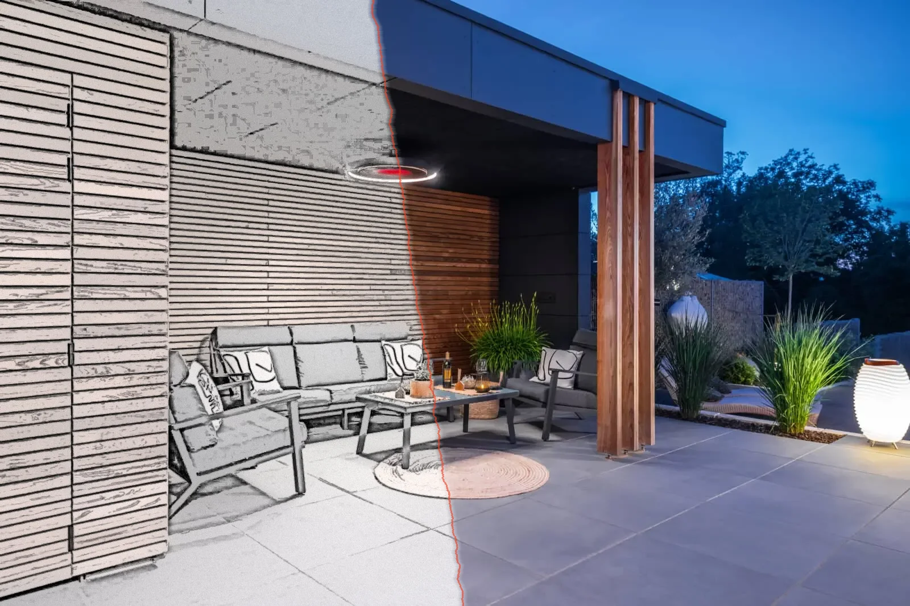
Outdoor Living
Trends 2027
10 shifts putting heat at the heart of the British garden. For architects, builders, homeowners and hospitality.
Every Outdoor Room Starts As A Sketch
The ones people use all year have heat drawn in from the first line.
The British garden is becoming a room. People are zoning it, cooking in it and relaxing in it – and the summers are hotter than ever.
What stands between people and more evenings outside is not desire but weather. Cover and heat are what turn a garden into a room you use from spring to autumn and beyond.
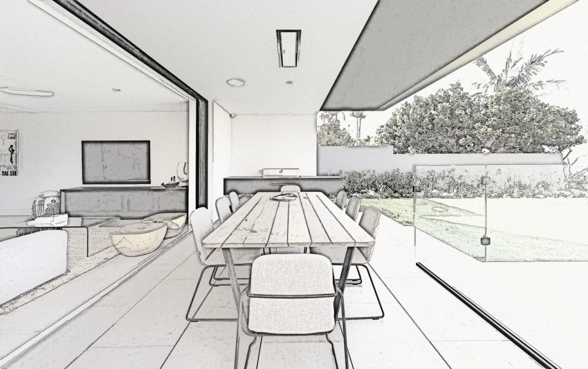
Outdoor Living, By The Numbers
of UK adults have created, or plan to create, distinct zones in their garden
Argos Outdoor Living Report 2026, n=2,000say it is too cold or rainy to use their outdoor space more – the top barrier
Furniturebox / YouGov, 2026, n=2,000Summer 2026 was the UK’s hottest on record, after 2025’s record year
Met Office, September 2026garden centre sales of BBQs and heating in July 2026, against +11% for all sales
HTA, August 2026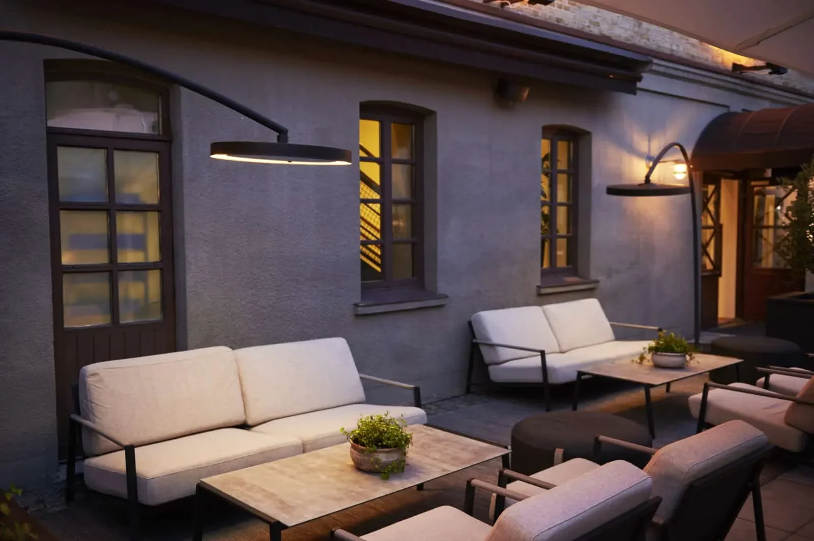
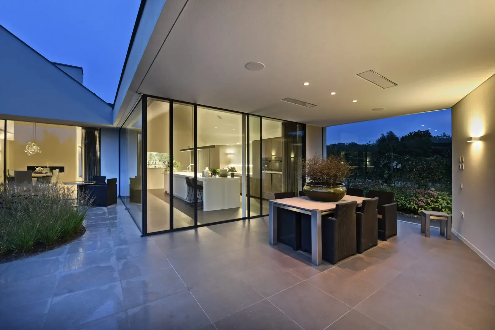
The Garden Becomes A Room
- Plan
- Zone
- Live
The British garden is being planned like a room of the house. Most people see it as extra living space, more than half are zoning it, and three in four adults have one to work with.
- 61%say a well-designed garden makes a house feel bigger (Argos)
- 55%have created, or plan to create, distinct zones in their outdoor space (Argos)
- 77%of British adults have a private garden – about 44 million people (HTA, 2025)
A room in the garden needs the services of a room – cover, power, light and heat.
Architects
Draw the outdoor room into the first plan, with its cover, light and heat.
Builders
Run outdoor power at first fix.
Homeowners
Budget for the garden like a room, not like furniture.
Heat is what turns a garden zone into a room you use in October.
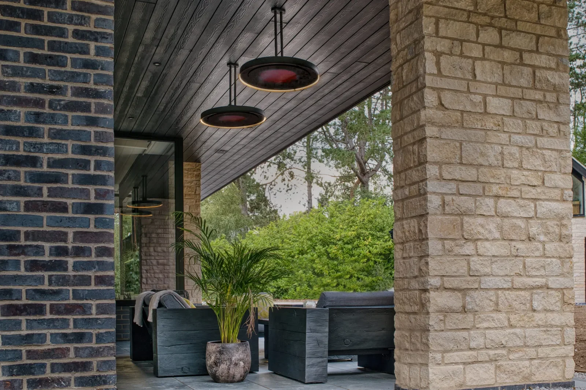
Weather Is The Barrier, Comfort Is The Answer
- Cover
- Warm
- Stay
Britons do not lack interest in their gardens – the weather stops them. Plans are cancelled on the forecast and winters are getting wetter. Cover and heat turn a doubtful evening into a certain one.
- 34%name weather as the biggest barrier to using their garden more (Argos)
- 65%cancel outdoor plans because of the forecast at least sometimes – 14% often, 51% sometimes (Furniturebox/YouGov)
- +13%wetter winter half-years in 2016–2025 than in 1961–1990 (Met Office)
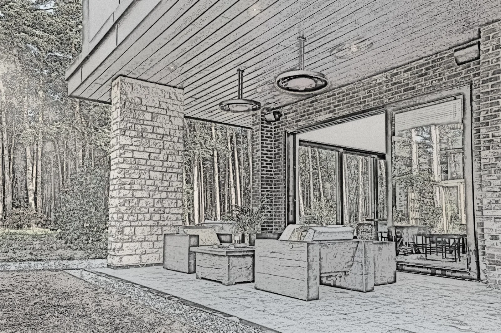
The barrier is the weather, so the answer is cover and heat together.
Homeowners
A covered, heated space turns “maybe” evenings into certain ones.
Designers
Pair every heater with shelter from the rain and wind.
Hospitality
Heated, covered terraces keep covers when the forecast turns.
Cover keeps the rain off; radiant heat keeps people there.
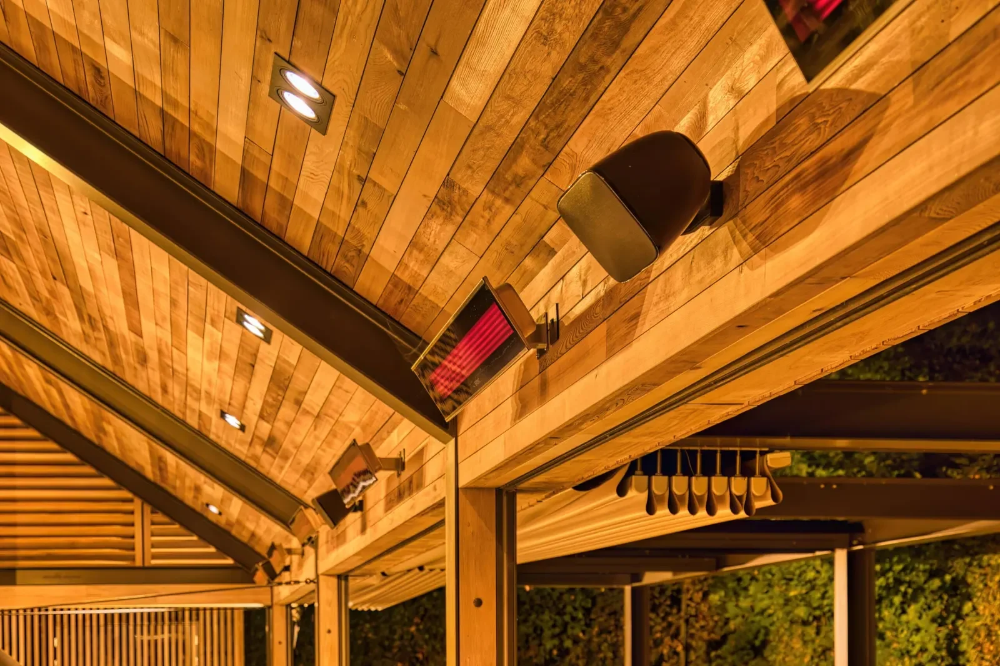
Hotter Summers, Wetter Shoulders
- Spring
- Summer
- Autumn
The UK has had record-breaking heat two years running. Gardens get more use and the season stretches either side of summer, while the shoulder months stay damp and dull – exactly when cover and heat earn their place.
- 16.5°CSummer 2026 UK mean – the hottest on record, beating 2025 (16.1°C)
- 10.09°C2025 UK mean temperature – the warmest and the sunniest year on record
- 120%of average rainfall in autumn 2025; October had just 63.3 hours of sun
Design for both: shade for the summer, heat and cover from October to April.
Designers
Plan shade for summer, and heat and rain cover for the shoulder months.
Hospitality
Trade the terrace earlier in spring and later in autumn.
Homeowners
The garden earns its keep in the months either side of summer.
Warmer years bring more evenings outside; heat makes the cooler ones count.
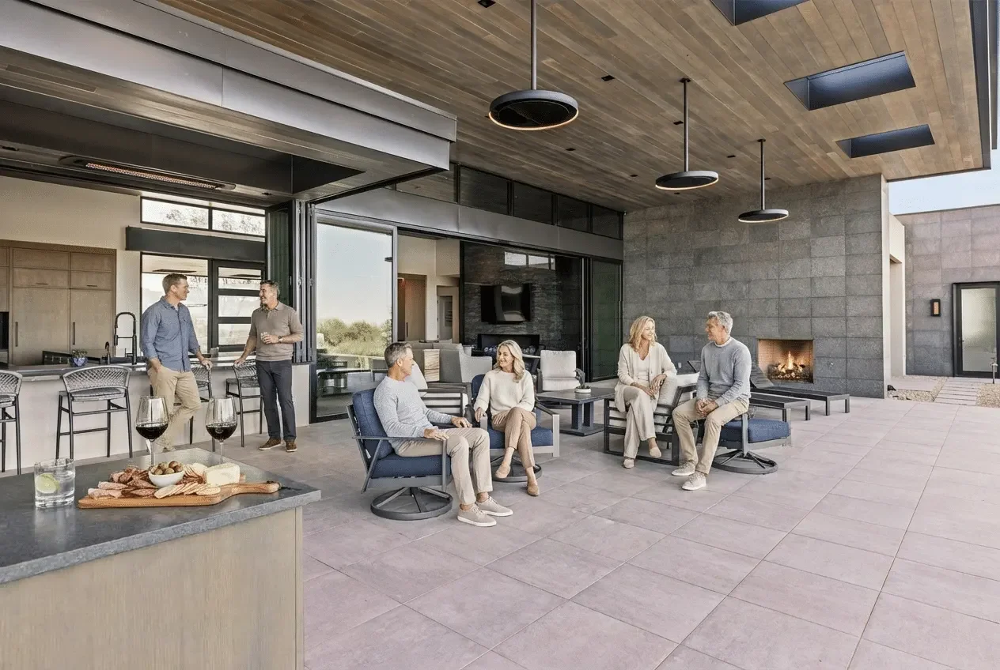
The Zoned Garden And The Outdoor Kitchen
- Cook
- Dine
- Gather
The garden is splitting into zones – dining, lounging, cooking – and the outdoor kitchen is growing up. Barbecues and heating are now bought together, and each zone needs its own light, cover and heat.
- #1Dining zones are the most popular garden zone (Argos)
- +42%John Lewis outdoor cooking sales, October 2025 against October 2024
- 23% · 11%of renovators added outdoor lighting, and gazebos or pergolas (Houzz UK, 2025)
Every zone needs its own heat, on its own switch.
Designers
Specify heat per zone, each with its own control.
Homeowners
Heat the dining table and the kitchen, not the lawn.
Retailers
Sell heat with the barbecue – shoppers already buy them together.
Zone heat where people sit and cook, controlled zone by zone.

Electric-First Outdoor Heat
- Electrify
- License
- Comply
New homes are moving to clean heat, the grid gets cleaner every year, and councils increasingly ask for electric infrared on pavement terraces.
- 2026Future Homes Standard laid in March: clean heating as standard in new homes in England
- InfraredSt Albans, York, Stevenage and North Somerset pavement licences allow electric or infrared heaters, not gas
- 126 gof CO2 per kWh of UK electricity in 2025 (Carbon Brief)
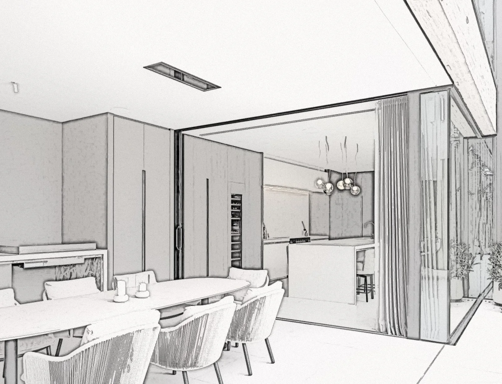
Electric is becoming the default for new homes and pavement terraces.
Builders
New homes increasingly have no gas supply – plan outdoor heat as electric.
Hospitality
Check the pavement licence – more councils ask for infrared with timers or sensors.
Architects
Specify electric infrared where the licence or the building calls for it.
Electric infrared fits the licence, the new home and a cleaner grid – and we offer gas where it still suits.
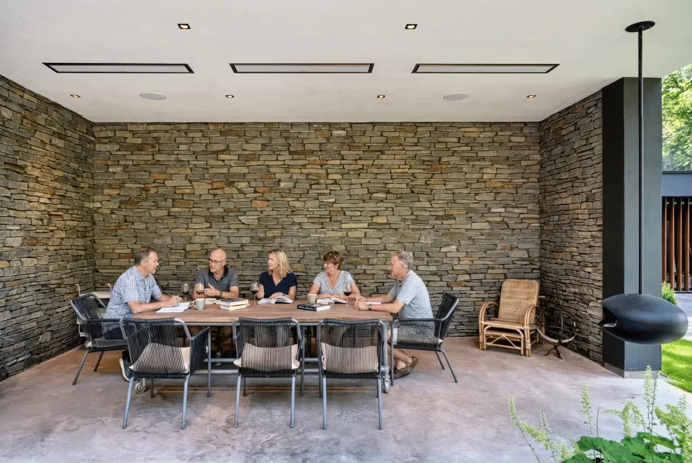
Heat People, Not Air
- Target
- Dim
- Time
With energy prices under scrutiny, how heat is delivered matters. Infrared warms the people and surfaces it can see, so placement and control decide both comfort and running cost.
- 26.32pper kWh – the electricity price cap for October to December 2026 (Ofgem)
- 74%of hospitality businesses saw higher electricity bills (UKHospitality, BBPA, BII and Hospitality Ulster, October 2026)
- Line of sightGovernment-commissioned research: infrared comfort depends on a clear line of sight to people (DESNZ, 2025)
Running cost is the question; placement and control are the answer.
Designers
Place heaters with a clear line of sight to the seats.
Operators
Zone, dim and time heat to the covers in use.
Homeowners
Dimming and zoning put heat only where people sit.
Infrared warms the people it can see. Affinity Smart-Heat controls dim, zone and time it; app and Wi-Fi features need compatible Affinity controls, sold separately.
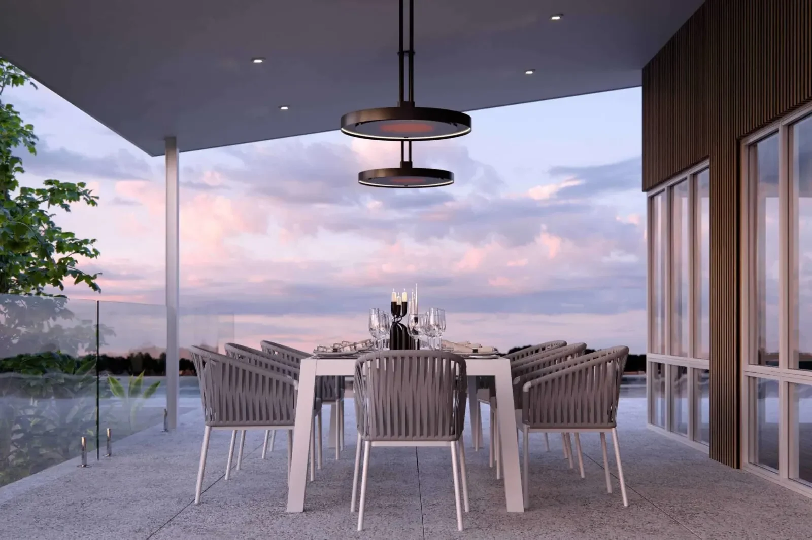
Smaller, Paved, Higher
- Compact
- Terrace
- Balcony
British gardens are increasingly hard-landscaped, many renters have no private plot, and more new homes are flats. The patio, the terrace and the balcony are where outdoor living happens.
- 36%of back-garden area is paved – 55% of front gardens (RHS, 2025)
- 61–63%of renters have a private plot, against 92% of owner-occupiers (English Housing Survey 2024–25)
- 27%of new homes completed in Wales in 2025–26 were flats (Welsh Government)
Compact spaces need heat that takes no floor space.
Designers
Wall, ceiling and recessed heat keeps small terraces free.
Developers
Heated terraces and balconies help sell flats.
Homeowners
One heater turns a paved patio into an evening room.
Wall, ceiling and recessed heat warms small spaces without taking floor space.
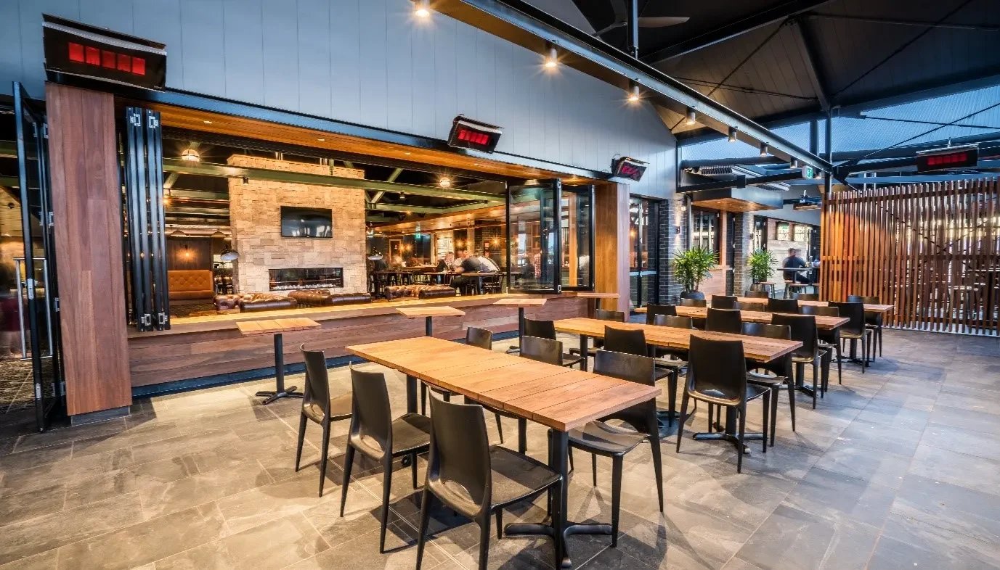
The Pub Garden Protects The Margin
- Covers
- Terrace
- Season
When the garden fills, pubs win. Warm months lift sales and pavement licences are now permanent – yet closures continue, so every usable outdoor seat matters more.
- +3.8%managed pub like-for-like sales in September 2026, helped by a warm start to autumn (NIQ/RSM)
- ~360pubs forecast to close in 2026 (BBPA)
- 2024pavement licences made permanent in England – heaters named as permitted furniture
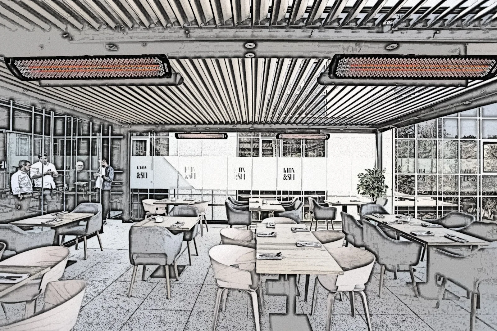
Outdoor space wins when it is usable in every month.
Operators
Heated, covered gardens win covers in spring and autumn, not only in heatwaves.
Designers
Fixed heat with metering and zone controls.
Venues
Use the permanent pavement licence to trade outside for more of the year.
A heated pub garden earns in March and October, not only in July.
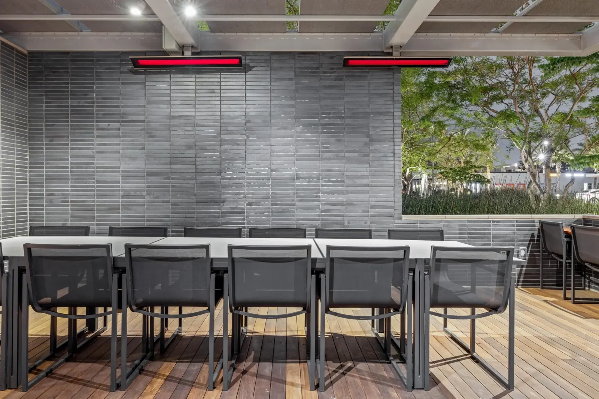
Considered, Better Projects
- Considered
- Designed
- Lasting
Spending is moving to considered, higher-value outdoor projects. Garden centres are growing, and half of renovating homeowners are working on their outdoor space.
- +9%garden centre sales in 2025 (HTA)
- +4.0%garden centre card spend, July 2026 (Barclays)
- £21,440median renovation spend in 2024, up 26% (Houzz UK)
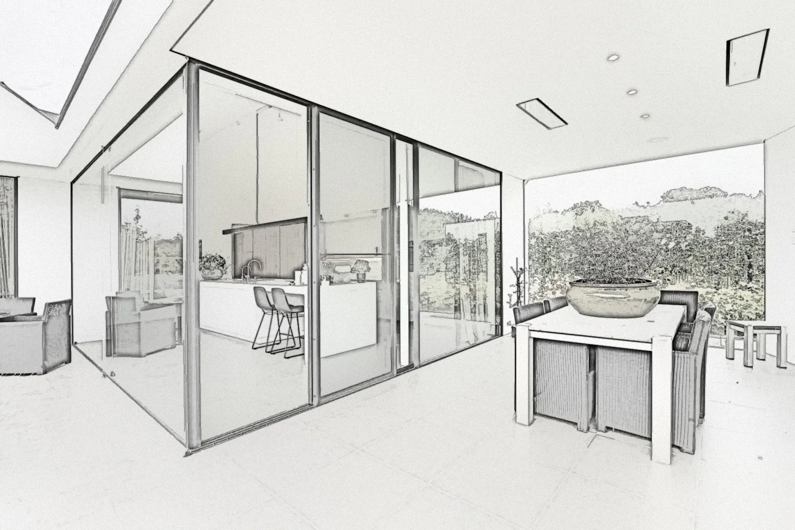
Expect better-specified projects led by designers and architects.
Architects
Lead the outdoor brief – heat and controls in the first drawing.
Designers
Specify quality fixtures that last outdoors.
Homeowners
Invest once in cover, light and heat designed together.
A considered garden deserves heat designed into it.
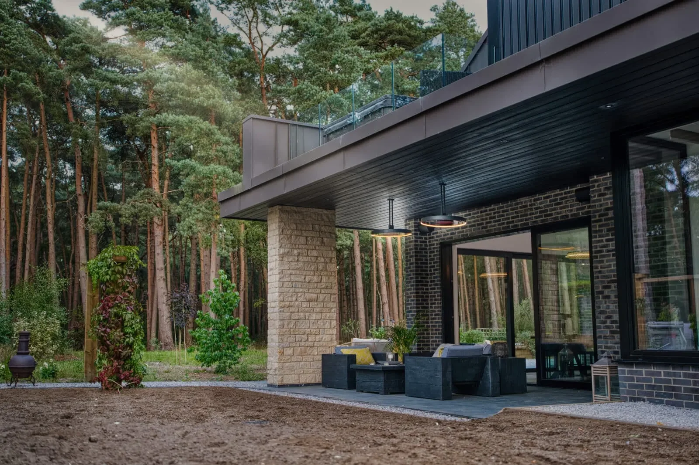
The Garden As A Place To Unwind
- Relax
- Restore
- Unwind
Britons use their gardens above all to relax, and most credit green space with their state of mind. The calmest hours outside are the evenings – and they only stay calm when they are warm.
- 70%use the garden to relax (HTA, 2023)
- 44%mainly want to use the garden to relax in 2026 (Furniturebox/YouGov)
- 77%of British adults have a private garden to retreat to (HTA, 2025)
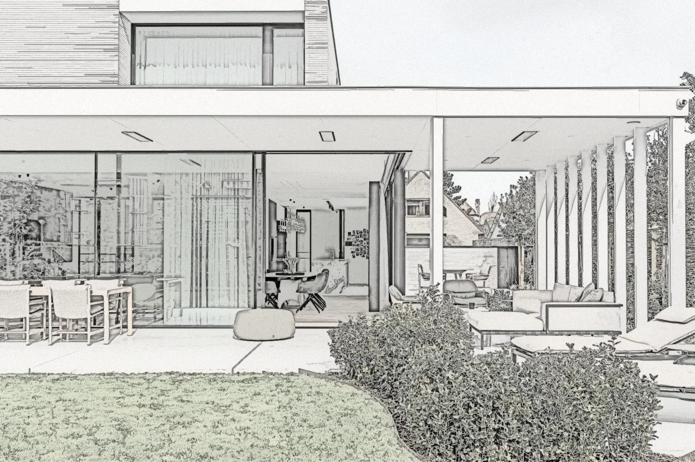
The quiet evening outside is the wellbeing moment – warmth keeps it going.
Homeowners
Plan a warm corner for the quiet hours, not only for parties.
Designers
Pair heat with soft light and shelter for calm evenings.
Hotels
Warm garden terraces are part of the wellbeing offer.
Gentle radiant warmth is what keeps the quiet hour outside going.
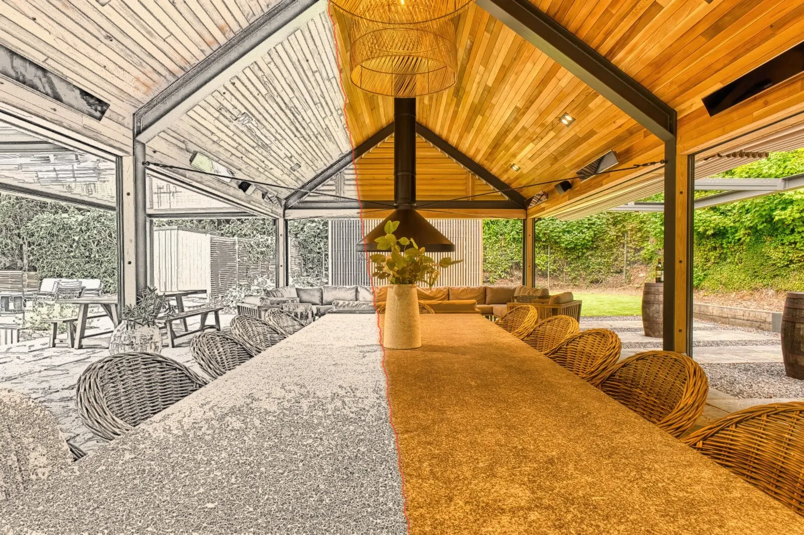
From Optional To Essential: Plan Heat From The Start
The garden is a room, the weather is the barrier, summers are hotter, the grid is cleaner and councils want infrared. Every shift leads to the same place: plan the heat with the cover, the power and the plan.
57% say it is too cold or rainy to use their outdoor space more. Cover and heat close that gap.
Furniturebox British Garden Survey 2026, YouGov- Outdoor power run at first fix, to BS 7671
- Heat recessed or mounted cleanly into roofs, pergolas and walls
- Infrared that meets pavement licence conditions
- One control scene for light and heat
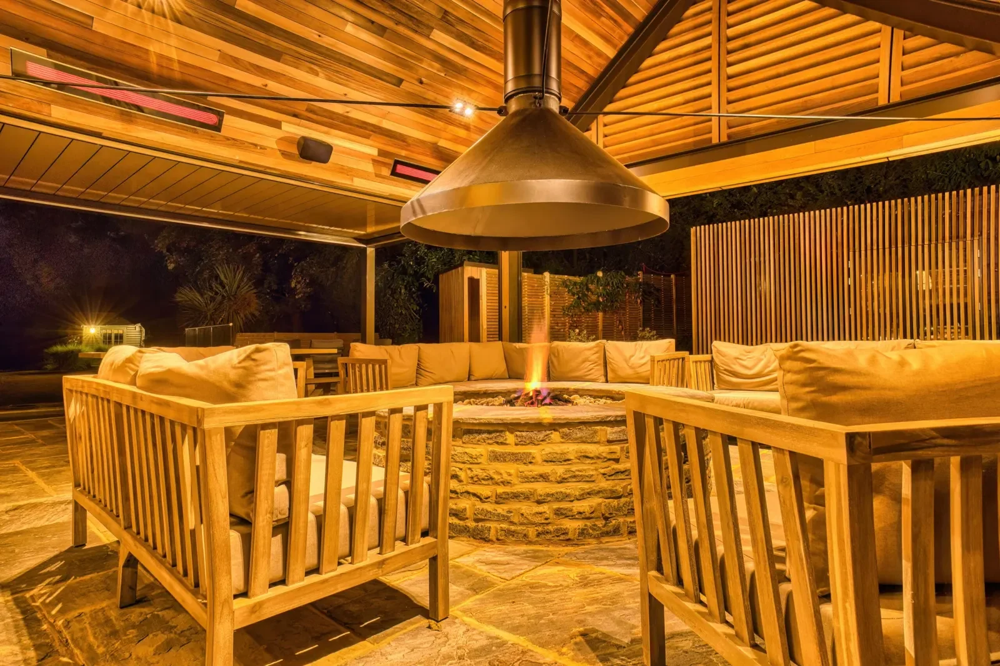
- ArchitectsDraw it.
- BuildersWire it.
- HomeownersAsk for it.
- OperatorsEarn from it.
Where The Numbers Come From
- Argos Outdoor Living Report 2026: online, nationally representative survey of 2,000 UK adults, February 2026.
- Furniturebox British Garden Survey 2026: YouGov panel, 2,000 UK adults, March 2026.
- Horticultural Trades Association (HTA): garden industry statistics 2023 and 2025; garden centre market updates, January and August 2026.
- Royal Horticultural Society, State of Gardening 2025 (satellite mapping of 25.8 million gardens in Great Britain).
- Houzz UK, Houzz & Home study, May 2025 (1,000+ users).
- John Lewis, How We Shop, Live and Look, December 2025; Barclays Consumer Spend, August 2026.
- Met Office: 2025 annual statistics (January 2026); State of the UK Climate 2025 (July 2026); summer 2026 provisional statistics (September 2026); autumn 2025 statistics.
- Ministry of Housing, Communities and Local Government: Future Homes Standard, March 2026; English Housing Survey 2024–25; pavement licences guidance, April 2024. Welsh Government, new house building 2025–26.
- Pavement licence conditions: St Albans, York, Stevenage and North Somerset councils (statement of principles 2026–28).
- Carbon Brief, UK electricity in 2025 (January 2026); Ofgem energy price cap, October–December 2026.
- UKHospitality, BBPA, BII and Hospitality Ulster member survey, October 2026; BBPA pub closures, 2026; NIQ/RSM Hospitality Business Tracker, 2025–2026.
- Department for Energy Security and Net Zero: infrared heating research, Leeds Sustainability Institute, August 2025.
- Fortune Business Insights, Outdoor Heating Market Size and Forecast 2026–2034 (paid estimate).
Market figures are research estimates, not audited sales. Retailer and brand surveys are named. Running costs are our calculation from the Ofgem price cap and change with each cap. Photography: Bromic installations; one image is a Bromic photograph with a Tungsten Series II heater rendered from CAD. Sketch renderings are made from those photographs. Wi-Fi and app features need compatible Affinity controls, sold separately. Check local codes and pavement licence conditions; installation by a qualified electrician to BS 7671.